文件系统实现与崩溃一致性：从块设备到日志
课程：2026 春季学期《操作系统原理》
讲师：蒋炎岩（jyy）
官方课程主页：https://jyywiki.cn/OS/2026/
官方讲义：https://jyywiki.cn/OS/2026/lect26.md
视频来源：Bilibili BV12EV66bErd
版权说明：课程讲义与幻灯片归蒋炎岩所有，采用 Creative Commons BY-NC 4.0 许可；本电子书是对课堂讲授的书面化重构，保留出处与许可说明。
导语：文件系统就是一个持久化数据结构
(参考时间: 00:00)
上一讲已经说明：任何实现目录树与文件读写的对象都可以称为文件系统。
这一讲把它放回块设备：
如何在只能按块读写的存储设备上，实现目录树、文件、元数据和持久化？
核心工具只有三个：
bread(block); // load
bwrite(block); // store
bsync(); // barrier / durability
flowchart LR
A["目录树 / 文件"] --> B["文件系统数据结构"]
B --> C["bread / bwrite / bsync"]
C --> D["块设备"]
D --> E["持久化存储"]
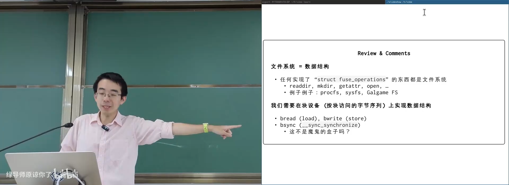
📷 块设备的 bread、bwrite、bsync 是文件系统的底层原语
回到原视频 (00:02:30)
1. 块设备不是一块简单的字节数组
1.1 GPT 分区表
(参考时间: 00:03)
一块磁盘常被划分为多个分区：
/dev/nvme0n1
/dev/nvme0n1p1
/dev/nvme0n1p2
分区信息由 GPT 描述：
- GUID Partition Table；
- UEFI 规范的一部分；
- 固件启动时需要解析；
- 头部记录分区位置、大小和类型；
- 尾部通常保存备份副本。
flowchart TD
DISK["Block Device"] --> MBR["Protective MBR"]
MBR --> GPT["GPT Header"]
GPT --> E1["Partition Entry 1"]
GPT --> E2["Partition Entry 2"]
E1 --> P1["/dev/nvme0n1p1"]
E2 --> P2["/dev/nvme0n1p2"]
GPT --> BACKUP["Backup GPT at Disk End"]
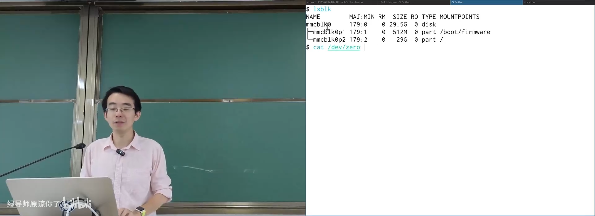
📷 GPT 本身也是存储在磁盘上的数据结构
回到原视频 (00:05:30)
1.2 分区只是第一层抽象
(参考时间: 00:06)
一个分区还可以继续被虚拟化：
- Loop Device；
- LVM Physical Volume；
- Volume Group；
- Logical Volume；
- NVMe Namespace。
flowchart LR
PV1["Physical Volume 1"] --> VG["Volume Group"]
PV2["Physical Volume 2"] --> VG
PV3["Physical Volume 3"] --> VG
VG --> LV1["Logical Volume 1"]
VG --> LV2["Logical Volume 2"]
VG --> LV3["Logical Volume 3"]
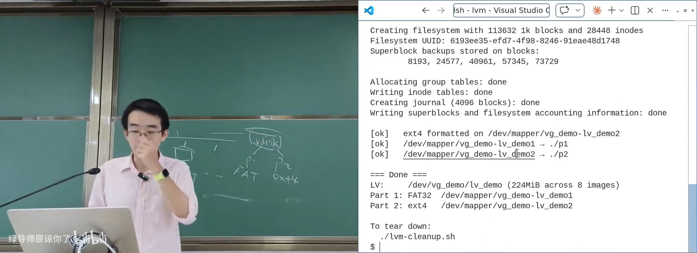
📷 LVM 可以把多个物理卷组合并切分为逻辑卷
回到原视频 (00:08:30)
1.3 用 strace 打开 LVM
(参考时间: 00:10)
LVM 工具表面上是命令，底层仍然是一组系统调用：
open("/dev/loop-control")
ioctl(LOOP_CTL_GET_FREE)
open("/dev/mapper/control")
ioctl(DM_DEV_CREATE)
ioctl(DM_TABLE_LOAD)
ioctl(DM_DEV_SUSPEND)
课程强调：这些复杂接口几乎全部通过 ioctl 暴露。
flowchart TD
A["LVM User Tool"] --> B["/dev/loop-control"]
A --> C["/dev/mapper/control"]
B --> D["Loop IOCTL"]
C --> E["Device Mapper IOCTL"]
D --> F["Virtual Block Device"]
E --> F
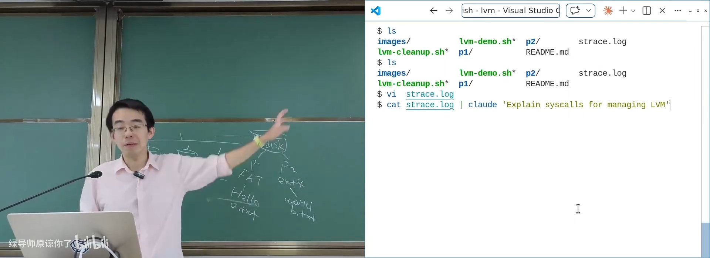
📷 LVM 的创建和映射通过 loop/device-mapper ioctl 完成
回到原视频 (00:10:30)
1.4 NVMe Namespace
(参考时间: 00:11)
NVMe Namespace 像“硬件级 LVM”：
- 一块 SSD 可暴露出多个 namespace；
- 每个 namespace 看起来是独立块设备；
- 上层文件系统只看到最终块数组。
flowchart LR
SSD["NVMe SSD"] --> NS1["Namespace 1"]
SSD --> NS2["Namespace 2"]
NS1 --> FS1["Filesystem A"]
NS2 --> FS2["Filesystem B"]
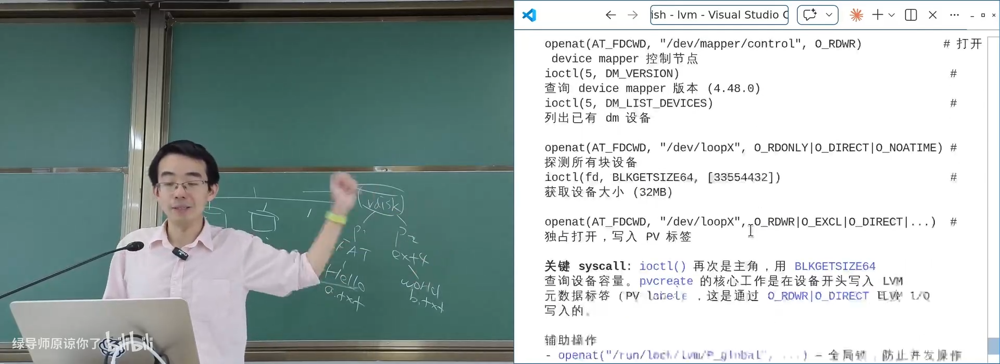
📷 NVMe Namespace 在硬件层提供块设备切分
回到原视频 (00:11:30)
2. 块访问的代价：缓存与读写放大
2.1 更新一个字节可能写多个块
(参考时间: 00:12)
追加一个 4 KB 数据块至少涉及：
- 更新数据块 bitmap；
- 写入数据块；
- 更新 inode 的大小、时间和索引。
如果只修改一个字节：
bread(block)
modify byte
bwrite(block)
update metadata
还会触发 SSD FTL 的映射表更新，导致更严重的读放大和写放大。
flowchart TD
A["Write 1 Byte"] --> B["Read Whole Block"]
B --> C["Modify Byte"]
C --> D["Write Whole Block"]
D --> E["Update Metadata"]
E --> F["FTL Mapping Update"]
F --> G["Read / Write Amplification"]
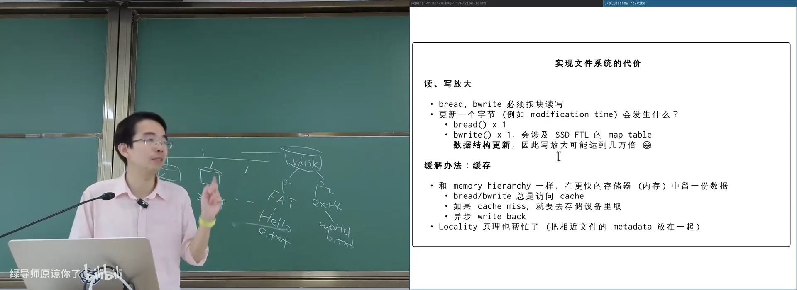
📷 块级接口会把小修改放大为多块读写
回到原视频 (00:13:30)
2.2 Buffer Cache
(参考时间: 00:15)
操作系统在内存中缓存文件系统块：
bread先查缓存；- 命中则直接返回；
- 未命中才访问块设备；
bwrite先写缓存，之后异步回写。
这与内存层次和共享内存非常相似：
load ≈ bread
store ≈ bwrite
flowchart LR
A["bread"] --> B{"Cache Hit？"}
B -- "是" --> C["Return Cached Block"]
B -- "否" --> D["Read Device"]
D --> E["Insert into Cache"]
E --> C
F["bwrite"] --> G["Update Cache"]
G --> H["Write Back Later"]
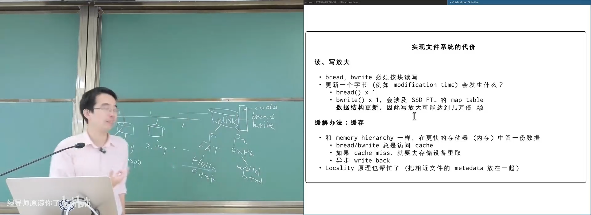
📷 文件系统通过缓存吸收部分块设备延迟
回到原视频 (00:15:30)
3. 设计文件系统：先做需求分析
3.1 需要持久化什么
(参考时间: 00:17)
文件系统需要保存：
- 文件字节数据；
- 文件元数据：名称、大小、权限、时间；
- 目录结构：名称到 inode 的映射；
- 空间分配信息；
- 链接关系。
flowchart TD
A["Filesystem State"] --> B["File Data"]
A --> C["Metadata"]
A --> D["Directory Entries"]
A --> E["Allocation Bitmap"]
A --> F["Links"]
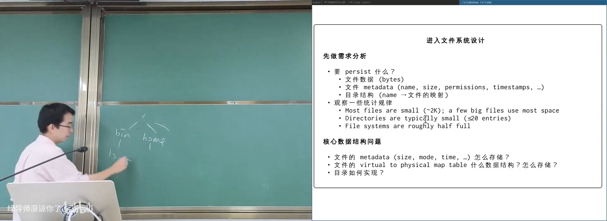
📷 文件系统需要持久化数据、元数据和目录图
回到原视频 (00:17:30)
3.2 常见 workload 统计
(参考时间: 00:19)
经典研究给出一些经验规律：
- 绝大多数文件很小；
- 少量大文件占用多数空间；
- 目录通常不超过几十项；
- 文件系统通常填充到接近一半；
- 元数据访问频率远高于文件内容全量读取。
flowchart LR
A["Many Small Files"] --> B["Optimize Small-file Path"]
C["Few Large Files"] --> D["Support Large-file Growth"]
E["Small Directories"] --> F["Simple Directory Layout"]
G["Half-full Filesystem"] --> H["Balance Free-space Policy"]
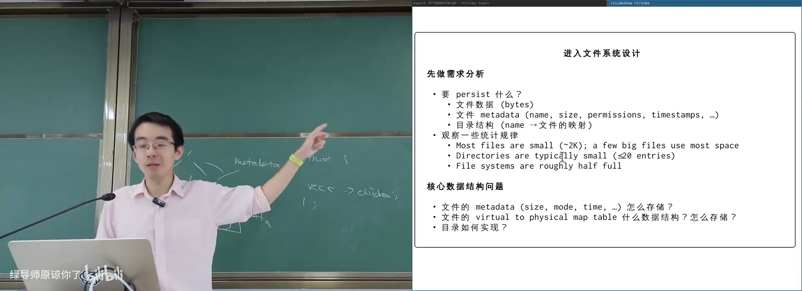
📷 文件大小与目录规模统计指导文件系统设计
回到原视频 (00:19:30)
3.3 三个核心问题
(参考时间: 00:21)
- 元数据放哪里？
- 文件块索引使用什么数据结构？
- 目录如何存储？
flowchart TD
A["Metadata Layout"] --> D["Filesystem Design"]
B["Block Index"] --> D
C["Directory Structure"] --> D
D --> E["Performance / Locality"]
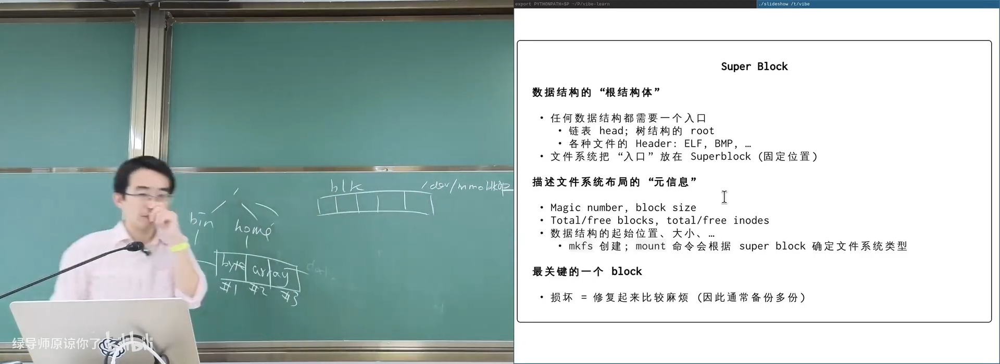
📷 元数据、块索引和目录是文件系统设计的三根支柱
回到原视频 (00:22:30)
4. Superblock：数据结构的根
(参考时间: 00:23)
所有数据结构都需要入口：
- 链表有 head；
- 树有 root；
- ELF 有 header；
- 文件系统有 Superblock。
Superblock 记录：
- Magic Number；
- Block Size；
- 文件系统总块数；
- 空闲块与 inode 数量；
- 元数据区域位置和大小。
flowchart TD
SB["Superblock"] --> BQ["Block Bitmap"]
SB --> IQ["Inode Bitmap"]
SB --> IT["Inode Table"]
SB --> DB["Data Blocks"]
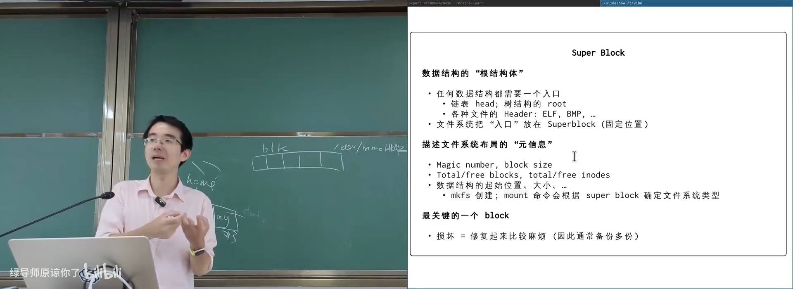
📷 Superblock 是文件系统的根元数据
回到原视频 (00:23:30)
4.1 Magic Number 与自动识别
(参考时间: 00:24)
mkfs 写入 Superblock，mount 根据 Magic Number 识别文件系统类型。
如果 Superblock 损坏，文件系统可能无法挂载，因此通常保存多个副本。
flowchart LR
A["mkfs"] --> B["Write Superblock"]
B --> C["Magic / Layout / Counts"]
D["mount"] --> E["Read Superblock"]
E --> F{"Magic Recognized？"}
F -- "是" --> G["Load Filesystem"]
F -- "否" --> H["Mount Fails"]
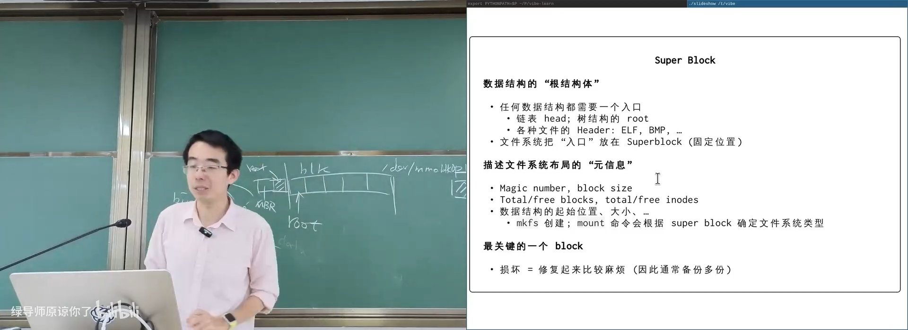
📷 Superblock Magic Number 决定文件系统识别与挂载
回到原视频 (00:24:30)
5. FAT：为极小空间设计的文件系统
5.1 FAT 与 Cluster
(参考时间: 00:26)
FAT 最早面向容量极小的软盘。
物理扇区可能是 512 B，但文件系统把 2^k 个扇区组成一个 cluster：
cluster size = 512 B × 2^k
FAT 的核心是 cluster 的 next 数组。
flowchart LR
C1["Cluster 1"] --> C2["Cluster 3"]
C2 --> C3["Cluster 4"]
C3 --> C4["EOF"]
FREE["0 = Free"] --> C5["Available Cluster"]
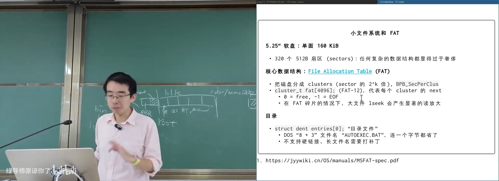
📷 FAT 把文件组织成 cluster 链表
回到原视频 (00:26:30)
5.2 FAT 表就是 next 数组
(参考时间: 00:29)
FAT-12 使用 12 位指针：
0 = free
EOF = cluster chain end
other = next cluster
12 位不是字节整数，因此两个 FAT-12 entry 会打包进 3 个字节：
24 bits = entry[i] (12 bits) + entry[i+1] (12 bits)
flowchart TD
A["FAT Entry 1: 12 bits"] --> C["3-byte Packed Block"]
B["FAT Entry 2: 12 bits"] --> C
C --> D["Next FAT Entry"]
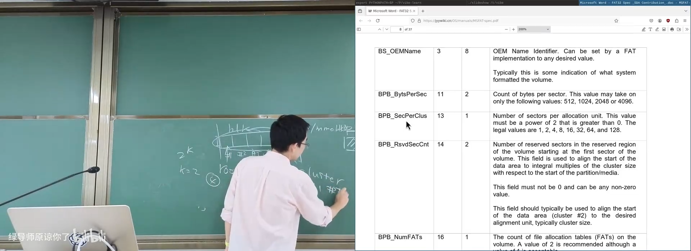
📷 FAT-12 按 bit 压紧存储，极限节省空间
回到原视频 (00:29:30)
5.3 FAT 碎片
(参考时间: 00:32)
频繁分配和释放会产生碎片：
file clusters:
464 → 465 → 466 ... 546
another file:
2407 ... 2431 → 2511 ... 2587
大文件碎片化后：
- cluster 链跳跃；
- FAT entry 本身也可能跨块；
lseek随机访问需要反复跟踪链；- 产生严重读放大。
flowchart LR
A["Logical File Blocks"] --> B["FAT Linked Clusters"]
B --> C1["Contiguous Run"]
B --> C2["Jump to Far Cluster"]
C2 --> C3["Jump Back"]
C3 --> D["Seek / I/O Amplification"]
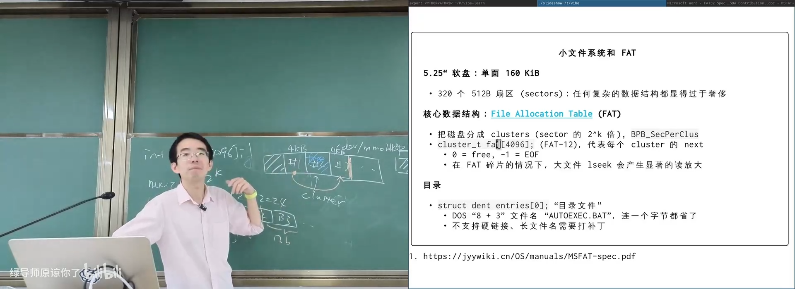
📷 碎片化让 FAT 链式索引产生大量随机 I/O
回到原视频 (00:33:00)
5.4 用 mmap 解析 FAT
(参考时间: 00:35)
把文件系统镜像映射到内存后，Superblock 就是结构体指针：
struct fat32_header *hdr = mmap(...);
随后可以递归扫描目录树。
flowchart TD
A["Disk Image"] --> B["mmap"]
B --> C["FAT32 Header"]
C --> D["Parse BPB"]
D --> E["Read FAT"]
E --> F["DFS Directory Scan"]
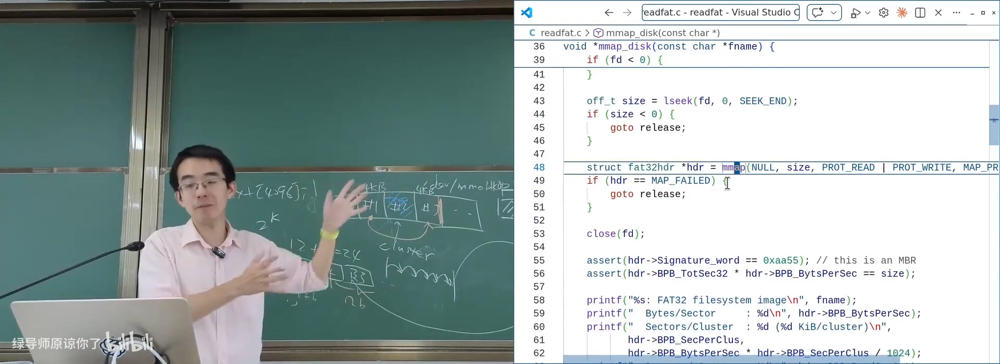
📷 readfat 工具用 mmap 把磁盘镜像当作数据结构访问
回到原视频 (00:35:30)
5.5 8.3 文件名
(参考时间: 00:38)
早期 FAT 目录项固定 11 字节：
8字符文件名 + 3字符扩展名
AUTOEXEC.BAT
长文件名通过扩展目录项和 ~1、~2 短名兼容实现。
flowchart LR
A["Long File Name"] --> B["LFN Entries"]
A --> C["8.3 Short Name"]
C --> D["DOS Compatibility"]
B --> E["Modern Long Name"]
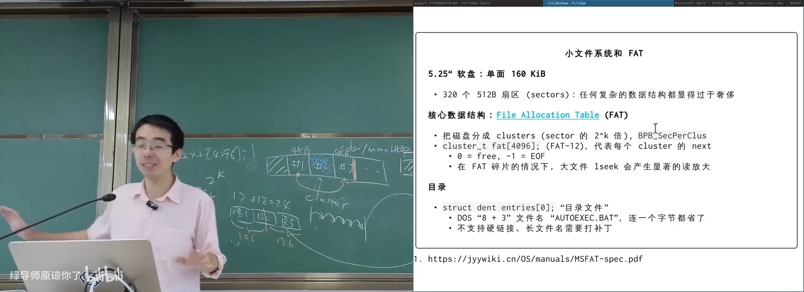
📷 FAT 用 8.3 短名和长文件扩展项保持兼容
回到原视频 (00:38:30)
5.6 目录也是文件
(参考时间: 00:40)
FAT 目录文件由大量 directory entry 组成：
name[11]
attributes
first_cluster_high
first_cluster_low
file_size
目录文件中保存每个子文件的第一块 cluster。
flowchart TD
A["Directory File"] --> D1["Entry: a.txt"]
A --> D2["Entry: b.txt"]
A --> D3["Entry: dir"]
D1 --> C1["First Cluster"]
D2 --> C2["First Cluster"]
D3 --> C3["Subdirectory File"]
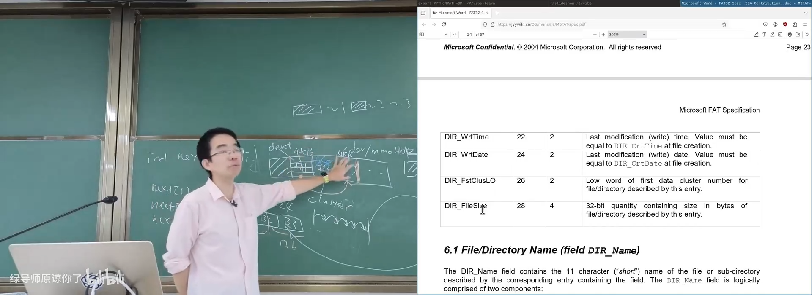
📷 FAT 目录项记录名称、属性和首个 cluster
回到原视频 (00:40:30)
6. UNIX 文件系统：分离 inode 与目录边
6.1 图模型
(参考时间: 00:41)
UNIX 文件系统把目录树扩展为图：
- 顶点是文件或目录；
- 目录项是边；
- 边把文件名映射到 inode；
.和..也是目录项。
flowchart TD
ROOT["/"] --> HOME["/home"]
ROOT --> BIN["/bin"]
HOME --> DOT["."]
HOME --> DOTDOT[".."]
HOME --> FILE["a.txt"]
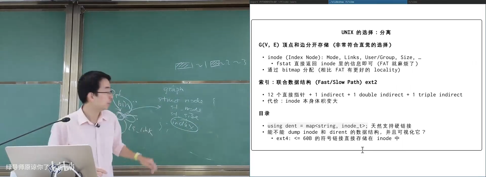
📷 UNIX 文件系统使用目录边连接 inode 顶点
回到原视频 (00:43:30)
6.2 inode
(参考时间: 00:43)
顶点元数据保存在 inode：
- mode；
- link count；
- uid / gid；
- size；
- timestamps；
- block index。
struct inode {
mode_t mode;
nlink_t links;
uid_t uid;
gid_t gid;
off_t size;
block_t index[...];
};
flowchart LR
A["Directory Entry"] --> B["Inode Number"]
B --> C["Inode Metadata"]
C --> D["Data Block Index"]
D --> E["File Bytes"]
📷 inode 保存顶点元数据和数据块索引
回到原视频 (00:43:30)
6.3 直接块与间接块
(参考时间: 00:45)
为兼顾小文件快速访问与大文件容量，UNIX 使用联合索引：
12 direct blocks
1 single indirect
1 double indirect
1 triple indirect
flowchart TD
I["Inode"] --> D["Direct Blocks"]
I --> S["Single Indirect"]
S --> S1["Data Blocks"]
I --> D2["Double Indirect"]
I --> T["Triple Indirect"]
D2 --> D21["Indirect Blocks"]
T --> T1["Indirect Trees"]
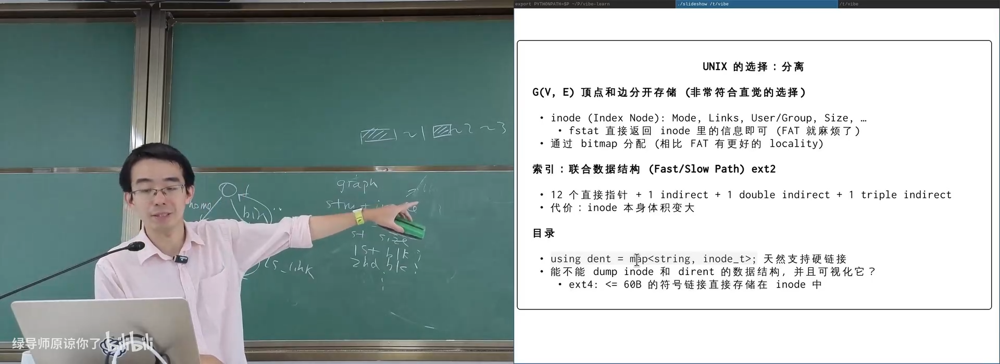
📷 直接指针与多级间接索引兼顾小文件和大文件
回到原视频 (00:45:30)
6.4 目录项与硬链接
(参考时间: 00:46)
目录是：
map<string, inode_number>
多个目录项可以指向同一个 inode，这就是硬链接。
flowchart LR
A["name a.txt"] --> I["Inode 42"]
B["name alias.txt"] --> I
I --> D["File Data"]
I --> L["Link Count = 2"]
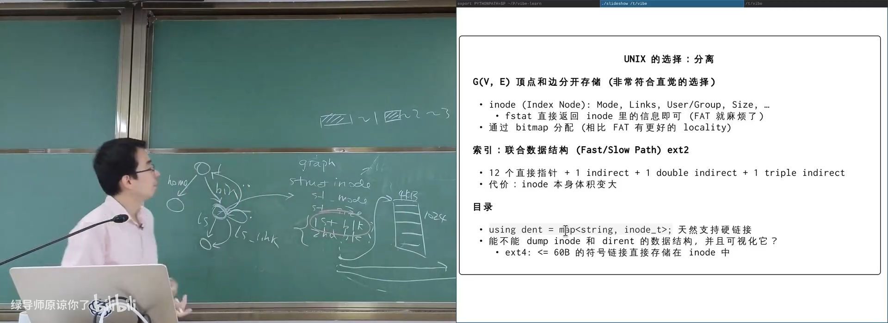
📷 多个目录项可以指向同一个 inode，实现硬链接
回到原视频 (00:46:30)
6.5 Inline Symlink
(参考时间: 00:47)
ext4 对不超过约 60 B 的符号链接：
- 不分配额外数据块；
- 直接把链接目标写进 inode 的块指针区域；
- 节省空间和 I/O。
flowchart TD
A["Short Symlink Target"] --> B{"<= 60 bytes？"}
B -- "是" --> C["Store Target Inside Inode"]
B -- "否" --> D["Allocate Data Block"]
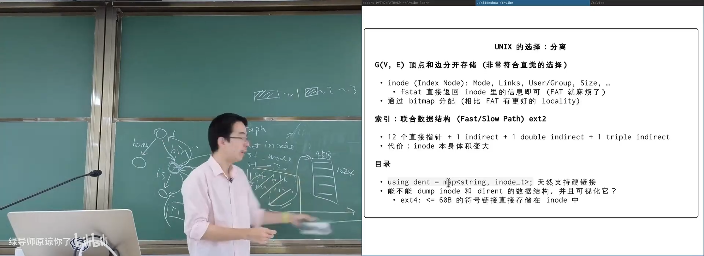
📷 短符号链接可以直接内联在 inode 中
回到原视频 (00:47:30)
6.6 debugfs 可视化
(参考时间: 00:49)
debugfs 可以在用户态读取 ext4 内部结构：
- inode；
- block allocation；
- directory entry；
- 符号链接目标；
- 文件到块的映射。
flowchart LR
A["ext4 Image"] --> B["debugfs"]
B --> C["Inodes"]
B --> D["Directory Entries"]
B --> E["Block Maps"]
C --> F["Visualization"]
D --> F
E --> F
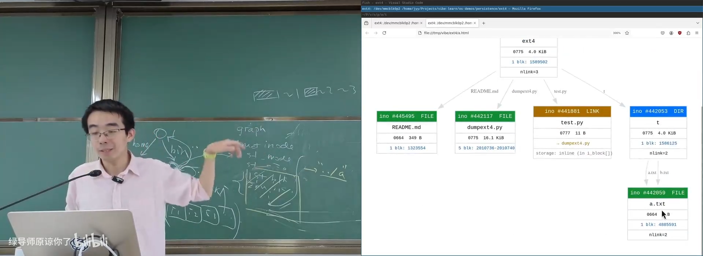
📷 debugfs 把 ext4 内部数据结构暴露给用户态工具
回到原视频 (00:49:30)
7. 崩溃一致性：块写入不是事务
7.1 一次 append 涉及多次写
(参考时间: 00:51)
追加一个数据块：
1. bwrite(block bitmap)
2. bwrite(data)
3. bwrite(inode)
每个操作本身可能成功，但设备可以重排写顺序。
flowchart LR
A["Allocate Block"] --> B["Update Bitmap"]
B --> C["Write Data"]
C --> D["Update Inode"]
D --> E["Filesystem Visible"]
F["Crash at Any Point"] --> G["Possible Inconsistent State"]
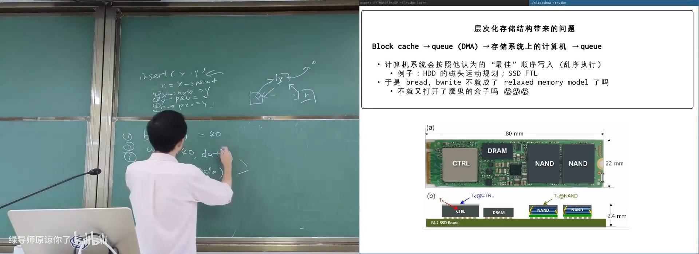
📷 追加一个块涉及 bitmap、数据和 inode 三处更新
回到原视频 (00:54:30)
7.2 设备会重排写入
(参考时间: 00:55)
从文件系统到物理介质之间有多层队列：
block cache
→ block queue
→ HDD scheduler / SSD FTL
→ flash controller
HDD 会优先选择距离读写头最近的请求；SSD 会把写分配到不同物理块。
flowchart TD
A["bwrite 1"] --> Q["Device Queue"]
B["bwrite 2"] --> Q
C["bwrite 3"] --> Q
Q --> D["Reordered Physical Writes"]
D --> E["Crash May Persist Any Subset"]
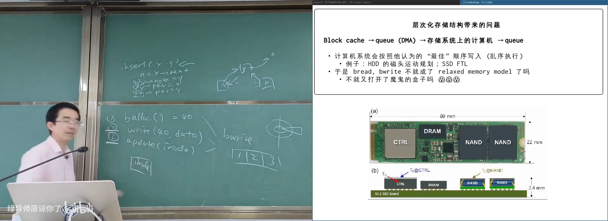
📷 设备队列可能重排写请求，崩溃时只保留任意子集
回到原视频 (00:56:00)
7.3 2³ 种结果
(参考时间: 00:56)
三个块写入在崩溃后可形成 2³ = 8 种已落盘子集。
例如：
inode 已更新
data 已更新
bitmap 未更新
文件当前看起来正常，但未来 bitmap 会再次分配该块，导致数据被覆盖。
flowchart TD
A["Inode Points to Block 40"] --> B["Block 40 Contains Hello"]
C["Bitmap Still Marks Block 40 Free"] --> D["Future Allocation Reuses Block 40"]
D --> E["File Data Corrupted Later"]
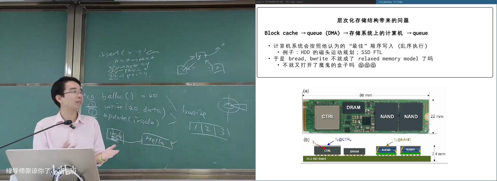
📷 bitmap 与 inode 不一致会在未来导致静默数据损坏
回到原视频 (00:56:30)
7.4 SSD FTL 崩溃
(参考时间: 00:58)
早期 SSD 在掉电时可能损坏 FTL 自身的数据结构：
- L2P 映射表损坏；
- 整个盘无法读取；
- SSD 无法像 HDD 一样拆盘恢复。
课程提到通过可编程关断电源，曾发现多类 SSD 固件崩溃问题。
flowchart TD
A["Power Loss"] --> B["FTL Metadata Torn"]
B --> C["Logical-to-Physical Map Invalid"]
C --> D["Drive Unreadable"]
D --> E["Firmware Failure Fixes"]
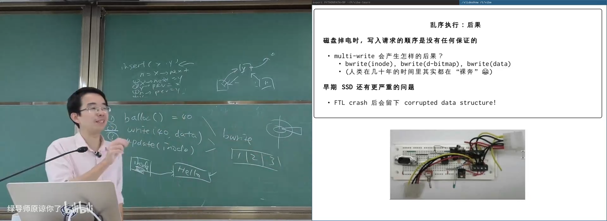
📷 SSD 掉电可能损坏 FTL 元数据，后果比单文件损坏更严重
回到原视频 (00:58:30)
8. FSCK：事后修复数据结构
8.1 扫描一致性
(参考时间: 01:00)
File System Check 扫描：
- inode 指向的数据块；
- block bitmap；
- directory graph；
- 链接计数；
- 超级块。
可以恢复“最可能”的旧状态，但无法保证所有数据正确。
flowchart TD
A["Scan Inodes"] --> D["Collect Used Blocks"]
B["Scan Bitmap"] --> E["Compare Allocation"]
C["Scan Directories"] --> F["Rebuild Graph"]
D --> G["Fix Inconsistencies"]
E --> G
F --> G
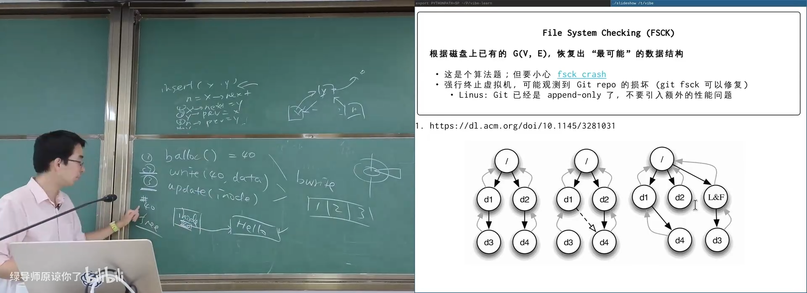
📷 FSCK 从磁盘残余结构推断并修复一致性
回到原视频 (01:00:30)
8.2 lost+found
(参考时间: 01:01)
如果 inode 仍存在，但没有任何目录指向它，FSCK 可能把它放进：
/lost+found
flowchart LR
A["Orphan Inode"] --> B{"Valid File Data？"}
B -- "是" --> C["Move to lost+found"]
B -- "否" --> D["Discard / Repair"]
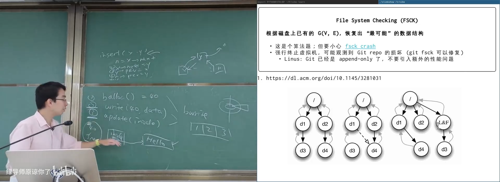
📷 lost+found 用于找回失去目录边但 inode 仍存在的文件
回到原视频 (01:01:30)
8.3 多指针更新天然不安全
(参考时间: 01:02)
链表插入：
x->next = y
y->prev = x
y->next = n
n->prev = y
崩溃在中间会留下半插入状态。
flowchart TD
A["x.next = y"] --> B["y.prev = x"]
B --> C["y.next = n"]
C --> D["n.prev = y"]
E["Crash After Step 2"] --> F["Half-linked Structure"]
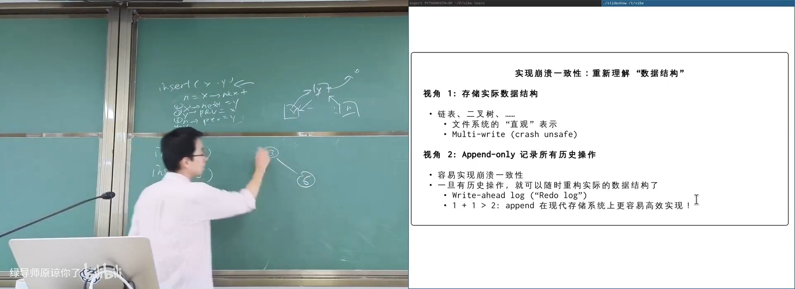
📷 传统多指针更新崩溃后可能形成半完成结构
回到原视频 (01:02:30)
9. 实现崩溃一致性：Append-only 与日志
9.1 两种数据结构视角
(参考时间: 01:03)
视角 1：实际数据结构
树、链表、bitmap、inode
直接 multi-write，崩溃不安全。
视角 2：操作日志
append operations
replay operations
append-only 天然更容易实现崩溃一致性。
flowchart LR
A["Actual Data Structure"] --> B["Multiple Writes"]
B --> C["Crash Unsafe"]
D["Append-only History"] --> E["Replay"]
E --> F["Crash Consistent"]
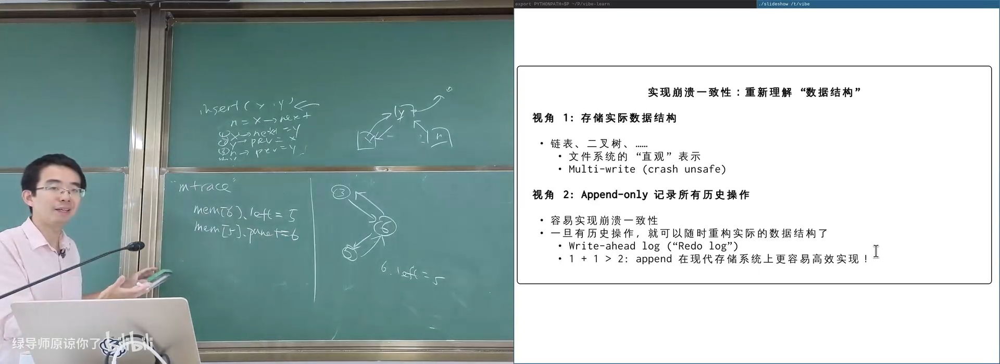
📷 用追加写记录历史，再重放恢复实际数据结构
回到原视频 (01:04:30)
9.2 LSM Tree
(参考时间: 01:06)
Log-Structured Merge Tree：
- 内存 MemTable 负责写；
- WAL 保证崩溃恢复；
- MemTable 满后 Flush；
- 磁盘只保存 immutable SSTable；
- 定期 Merge 小树到大树。
flowchart TD
A["Write Request"] --> B["MemTable"]
A --> C["WAL"]
B --> D{"MemTable Full？"}
D -- "是" --> E["Flush to SSTable"]
E --> F["Merge Lower Levels"]
C --> G["Crash Recovery"]
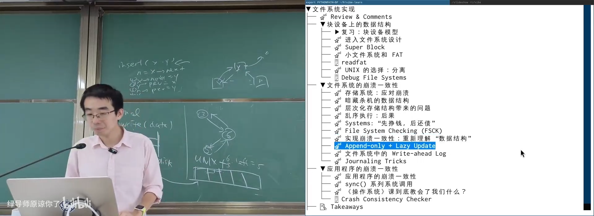
📷 LSM 把写集中到内存并使用 WAL 保证恢复
回到原视频 (01:06:30)
9.3 Write-ahead Log
(参考时间: 01:08)
文件系统日志：
- 写
TXBegin； - 写实际要修改的块；
flush；- 写
TXEnd； flush；- 后台 checkpoint 到真实位置；
- 回收日志。
flowchart TD
A["TXBegin"] --> B["Journal Operations"]
B --> C["flush"]
C --> D["TXEnd"]
D --> E["flush"]
E --> F["Replay / Checkpoint"]
F --> G["Reclaim Journal"]
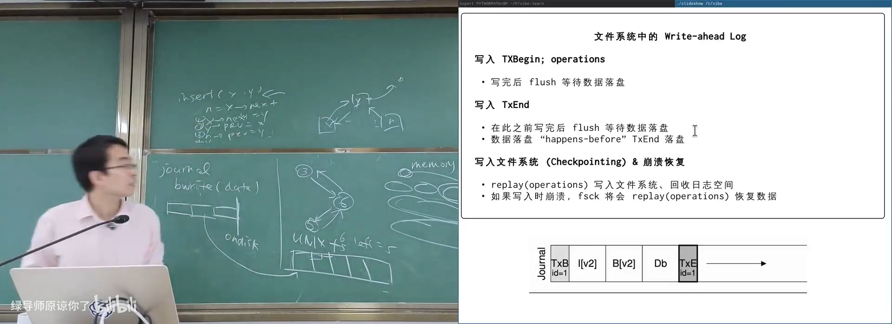
📷 日志用 flush 建立 TXEnd 与数据落盘的 happens-before 关系
回到原视频 (01:08:30)
9.4 Checkpointing
(参考时间: 01:10)
如果崩溃发生在 TXEnd 之前：
事务视为未完成
如果崩溃发生在 TXEnd 之后：
事务可完整 replay
flowchart TD
A["Crash Before TXEnd"] --> B["Ignore Transaction"]
C["Crash After TXEnd"] --> D["Replay Transaction"]
D --> E["Filesystem Updated"]
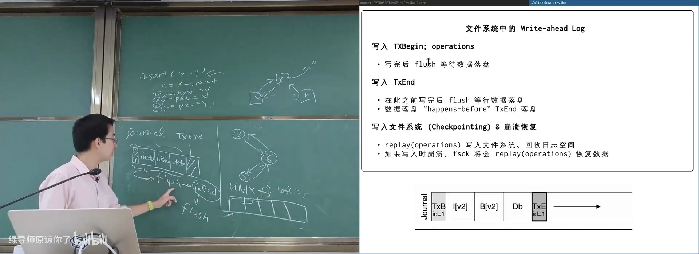
📷 TXEnd 决定日志事务是否在恢复时重放
回到原视频 (01:10:30)
9.5 批处理与 JBD
(参考时间: 01:11)
xv6、JBD 等实现会：
- 合并多个系统调用；
- 延迟回写；
- 减少 flush 次数；
- 牺牲少量延迟和丢失窗口换性能。
flowchart LR
S1["Syscall Write 1"] --> T["One Journal Transaction"]
S2["Syscall Write 2"] --> T
S3["Syscall Write 3"] --> T
T --> F["Single Flush"]
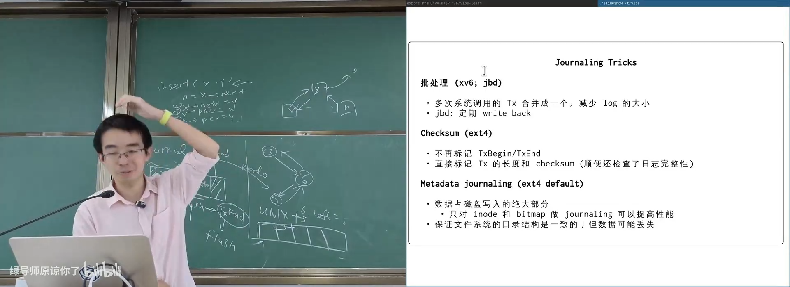
📷 批处理把多个修改合并进一个事务
回到原视频 (01:11:30)
9.6 ext4 checksum
(参考时间: 01:12)
ext4 可以：
- 不再依赖传统
TXBegin/TXEnd标记； - 在日志头记录长度和 checksum；
- 恢复时验证 checksum；
- checksum 错误则丢弃整个尾部事务。
flowchart TD
A["Journal Header"] --> B["Length + Checksum"]
B --> C["Replay / Scan"]
C --> D{"Checksum Valid？"}
D -- "是" --> E["Apply Transaction"]
D -- "否" --> F["Discard Tail"]
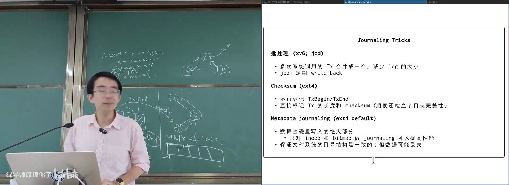
📷 ext4 用日志 checksum 检测不完整事务
回到原视频 (01:12:30)
9.7 Metadata Journaling
(参考时间: 01:14)
ext4 默认元数据日志：
- inode、bitmap、目录结构进日志；
- 文件数据不进日志；
- 保证目录树一致；
- crash 可能丢最近数据。
flowchart LR
A["Metadata Writes"] --> J["Journal"]
B["File Data Writes"] --> D["Direct Write Path"]
J --> C["Directory Tree Consistency"]
D --> E["Recent Data May Be Lost on Crash"]
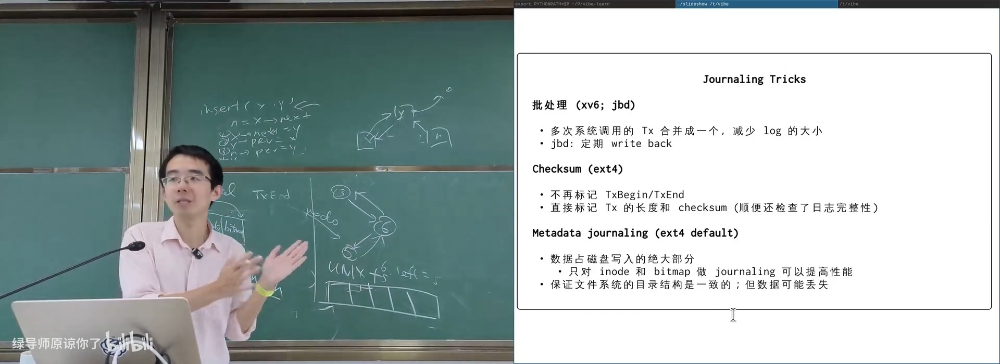
📷 元数据日志牺牲最近数据以保证目录结构一致
回到原视频 (01:14:30)
10. 应用程序也必须实现崩溃一致性
10.1 常见的错误保存方式
(参考时间: 01:15)
看起来合理的文件保存：
Path("a.txt.tmp").write_text(new_data)
unlink("a.txt")
rename("a.txt.tmp", "a.txt")
但元数据日志可能只重放了：
create a.txt.tmp
unlink a.txt
而没有重放数据写入，最终用户看到文件消失。
sequenceDiagram
participant App
participant FS
App->>FS: create temp
App->>FS: write temp
App->>FS: unlink original
App->>FS: rename temp
Note over FS: Crash before data durable
FS-->>App: Replay metadata only
App->>FS: File missing / empty
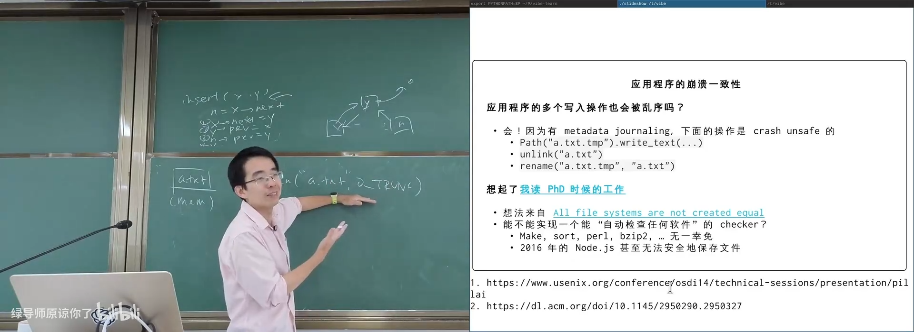
📷 临时文件、删除和重命名如果没有同步点，崩溃后可能丢文件
回到原视频 (01:15:30)
10.2 Git 的 crash consistency
(参考时间: 01:17)
Git 是 append-only object store，通常不调用同步：
- 对象一旦写入，不像普通文件那样原地修改；
- FSCK 可以恢复引用图；
- 快速关闭虚拟机可能导致 Git 目录不一致；
git fsck可以重新扫描对象。
课程 makefile 中加入全局 sync 以保证提交落盘。
flowchart TD
A["Git Objects"] --> B["Append-only Store"]
B --> C["Crash May Leave Partial Filesystem"]
C --> D["git fsck"]
D --> E["Recover Object Graph"]
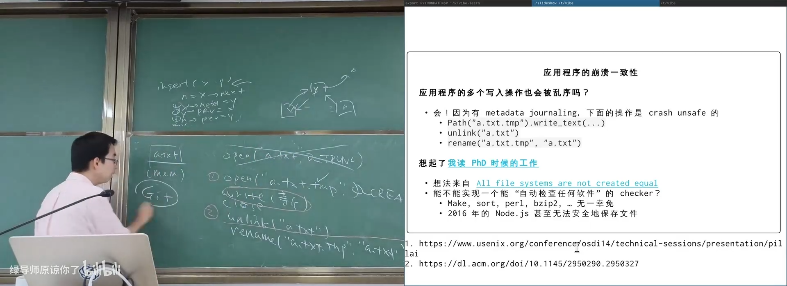
📷 Git 靠 append-only 对象图和 fsck 恢复崩溃后的状态
回到原视频 (01:17:30)
10.3 sync 系列系统调用
(参考时间: 01:19)
sync();
syncfs(fd);
fsync(fd);
fdatasync(fd);
区别：
| 调用 | 同步范围 |
|---|---|
sync |
所有文件系统 |
syncfs |
一个文件系统 |
fsync |
文件数据 + 全部元数据 |
fdatasync |
文件数据 + 影响读回的必要元数据 |
flowchart LR
A["sync()"] --> B["Global"]
C["syncfs(fd)"] --> D["Filesystem"]
E["fsync(fd)"] --> F["File + Metadata"]
G["fdatasync(fd)"] --> H["File Data + Minimal Metadata"]
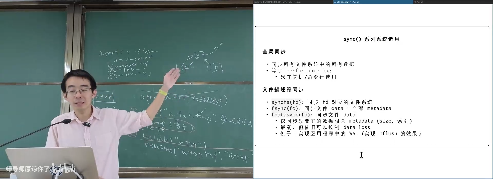
📷 不同 sync 调用覆盖的持久化范围不同
回到原视频 (01:19:30)
10.4 fdatasync 与数据库
(参考时间: 01:21)
固定大小的数据库文件：
- 空间早已分配；
- 修改数据不改文件大小；
- inode block map 不变；
fdatasync不需要同步大多数 inode 变化。
因此数据库 WAL 常优先使用 fdatasync。
flowchart TD
A["Fixed-size Database File"] --> B["Data Written"]
B --> C["Size Unchanged"]
B --> D["Block Map Unchanged"]
C --> E["fdatasync"]
D --> E
E --> F["Avoid Inode Write"]
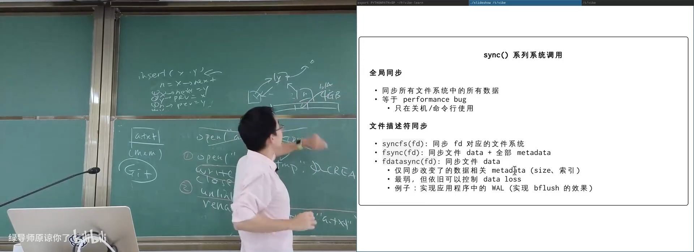
📷 fdatasync 适合固定大小数据库和自定义 WAL
回到原视频 (01:21:00)
10.5 正确保存文件
(参考时间: 01:22)
基本模式：
write("a.txt.tmp", new_data)
fsync(fd_of_tmp)
rename("a.txt.tmp", "a.txt")
关键要求：
- 新数据先
fsync； - rename 由文件系统提供原子性；
- 必要时再同步目录项。
flowchart LR
A["Write Temp File"] --> B["fsync Temp"]
B --> C["Atomic rename"]
C --> D["Old or New Complete Version"]
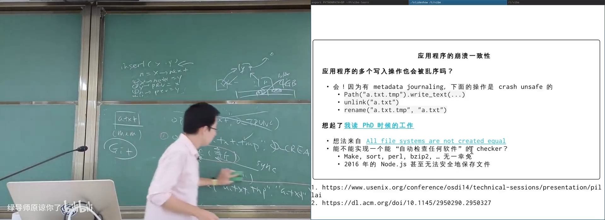
📷 先同步临时文件，再用原子 rename 替换正式文件
回到原视频 (01:22:30)
10.6 现实软件中的问题
(参考时间: 01:23)
课程研究曾发现：
- Make 可能留下错误构建结果；
- in-place sort 可能损坏文件；
- Perl 的 in-place 替换可能丢文件；
- 2016 年的 Node.js 缺少安全保存文件的标准 API；
- 许多 Electron 应用存在同类问题。
flowchart TD
A["Legacy Application"] --> B["Temporary File"]
B --> C["Delete Original"]
C --> D["Rename"]
D --> E["Crash Inconsistency"]
F["Missing fsync"] --> E
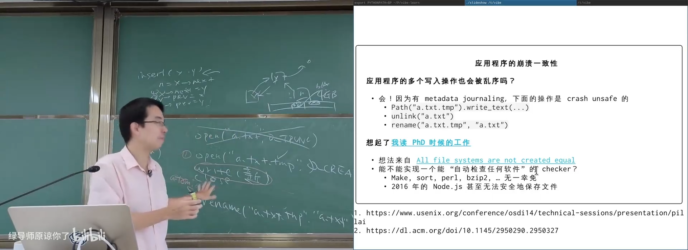
📷 大量旧应用没有正确处理保存文件的崩溃一致性
回到原视频 (01:23:30)
11. Crash Consistency Checker
(参考时间: 01:25)
课程用 strace 追踪程序对文件的写入和同步调用：
- 记录文件相关系统调用；
- 枚举多种 crash 点；
- 构造可能的重排顺序；
- 重放文件系统状态；
- 用 LLM 判断是否存在数据丢失或不一致；
- 输出
result.json。
flowchart TD
A["Application Run"] --> B["strace File Syscalls"]
B --> C["Trace + fsync Points"]
C --> D["Generate Crash Prefixes"]
D --> E["Replay States"]
E --> F["LLM Inspect Result"]
F --> G["Inconsistency Report"]
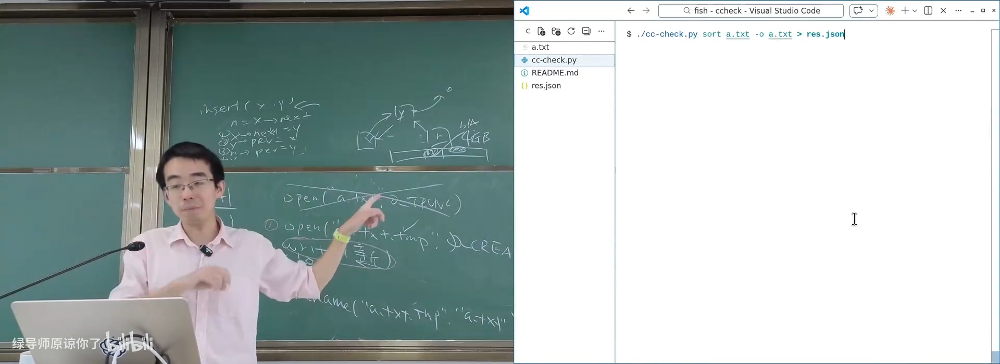
📷 strace 加 AI 分析可以自动检查应用程序崩溃一致性
回到原视频 (01:25:30)
11.1 AI 时代的研究机会
(参考时间: 01:26)
讲师指出：
- 老论文的思想可以用 AI 重新实现；
- 实验规模可以扩大百倍；
- LLM 可以替代许多脆弱 heuristics；
- 但不要只做“洗论文”；
- 应利用工具探索世界上没人做过的问题。
flowchart LR
A["Old Conceptual Paper"] --> B["LLM Reimplementation"]
B --> C["Larger Experiment"]
C --> D["New Evidence"]
D --> E["Original Research"]
C --> F["Paper Washing"]
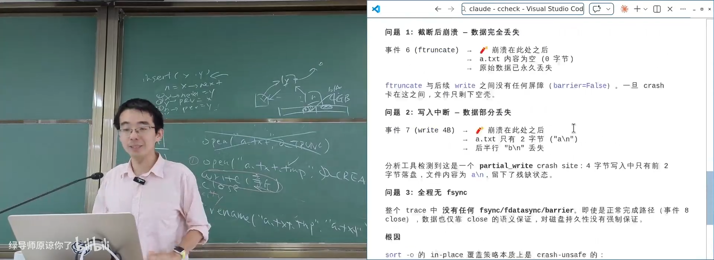
📷 AI 可以复现并扩大经典实验，但研究应追求未解决问题
回到原视频 (01:26:30)
12. 总结：用合适的数据结构守护持久数据
文件系统实现包含多个层次：
- 用 GPT、LVM、NVMe Namespace 等虚拟化块设备；
- 用 Superblock 建立入口；
- 用 FAT 或 inode 组织文件块；
- 用目录项组织命名图；
- 用缓存降低块访问成本；
- 用 FSCK 修复非一致状态；
- 用 WAL/Journal 保证多块更新原子性；
- 用
fsync、fdatasync和原子 rename 保证应用级持久性。
flowchart TD
A["Block Device"] --> B["Partitions / LVM"]
B --> C["Superblock"]
C --> D["Allocation Metadata"]
C --> E["Inodes"]
C --> F["Data Blocks"]
E --> G["Directory Graph"]
G --> H["Filesystem Operations"]
H --> I["Journal / WAL"]
I --> J["Crash Consistency"]
核心结论：
文件系统不是必须照搬教科书的固定结构，而是围绕硬件、workload 和一致性要求设计的数据结构。持久数据的安全来自底层日志、同步协议和应用程序保存协议的共同配合。
附：官方参考与延伸阅读
- UEFI GPT 规范
- LVM 实验
- MS FAT 规范
- readfat 实验
- Debug ext4 实验
- FSCK Crash 论文
- Crash Consistency Checker
- All File Systems Are Not Created Equal
- Crash Consistency: Rethinking Application Programming Models
官方课程资料：
版权与署名：本讲课程材料由蒋炎岩（jyy）编写。课程讲义与幻灯片采用 Creative Commons BY-NC 4.0 许可；本电子书保留课程出处、作者署名与许可说明。